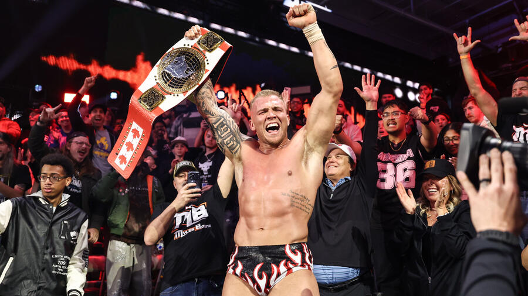

NXT is where Johnny became Johnny Wrestling
Not just a wrestler people liked. Not just a solid hand. A true NXT icon: the guy fans believed in because his whole story was built on grit, heart, and refusing to stay down.
He came back to NXT in a slump. He looked drained, doubted, and disconnected from himself. And still, somehow, the moment found him. Johnny Gargano has another shot at the NXT North American Championship and this fan page exists for one reason: to say loudly and without apology that the heart of NXT still beats with Johnny Wrestling. The catch is real, too: the title is around the waist of Myles Borne, a rising champion who looks fully convinced this moment belongs to him.

Johnny Gargano returning to NXT for this opportunity hits differently because NXT is not just another stop in his career. It is the place where his legend was built. The comeback energy here is what makes the whole thing electric: he was struggling, Candice LeRae brought him back to the brand that made him, and now he is one win away from wearing that championship again.
Not just a wrestler people liked. Not just a solid hand. A true NXT icon: the guy fans believed in because his whole story was built on grit, heart, and refusing to stay down.
This is not polished, corporate comeback energy. It is messier than that. It feels human. He came in hurting, disconnected, and not fully himself, which makes the possibility of a rise feel even bigger.
There is heart in this story. Candice LeRae bringing him back and pushing him toward the finish gave the whole thing emotion, loyalty, and a sense that belief can carry someone until they catch up to themselves again.
This is a championship that fits him. Fast-paced. Hard-earned. Built for a guy whose biggest weapon has always been resolve. A North American Title run from Gargano would feel right instantly.
The road to this championship opportunity was not clean, pretty, or heroic in the traditional sense. It was chaos. Entrants rolled in. Alliances interfered. Bodies piled up. Shiloh Hill looked ready to run the table. And through all of it, Johnny Gargano, barely moving for long stretches, ended up with the winning pin and the title shot.
Robert Stone puts together a Gauntlet Eliminator to crown a number one contender for Myles Borne's NXT North American Championship.
Jackson Drake, Shiloh Hill, Charlie Dempsey, and Dion Lennox cycle into the match, and then Candice LeRae appears to introduce Johnny Gargano.
Gargano feels emotionally checked out, O.T.M. attacks at ringside, and the whole eliminator shifts from orderly contender's match into unstable chaos.
Hill stacks eliminations and feels like the clear story of the match until more punishment, interference, and accumulated damage blow the door back open.
At exactly the right instant, LeRae pushes Johnny into position, belief becomes action, and Gargano steals the pin that sends him to Stand & Deliver.
Johnny earned the shot. Now he has to take the title from a champion who believes this era belongs to him. That is what makes this comeback chance feel alive: the obstacle is real. Myles Borne is not filler. He is the reigning NXT North American Champion, a rising force in the brand, and the exact kind of titleholder who can turn a comeback dream into a hard collision with the present.

Borne comes into Stand & Deliver feeling like one of NXT's names on the rise. WWE has positioned him as a serious singles champion: a Wilmington, North Carolina native who came up through No Quarter Catch Crew, built momentum one step at a time, and now carries the North American Championship into one of the biggest matches of his career. WWE has also referenced Borne as partially deaf, which gives his rise extra weight. He does not read like someone who was handed a spotlight. He reads like a champion who fought his way into one.
Borne captured the North American Championship by defeating Ethan Page on the February 24, 2026 episode of NXT. The breakthrough win was built on smart damage to Page's ankle, surviving the chaos around him, and finishing the job with Borne Again to end the reign.
For Johnny to hold that title again, he has to stop a rise that is happening right now.
Johnny may have the deeper legacy, but Borne brings present-day force into the fight: explosiveness, confidence, and major-match weapons that can shut momentum down fast, including Borne Again, a Spear, and a powerslam that can flip a match in an instant.
The argument is not based on nostalgia alone. Johnny Gargano has the resume, the history, the ring IQ, and the emotional ceiling for this kind of moment. He has already held the title. He knows what pressure in NXT feels like. And when the stage is biggest, his best self tends to show up.
Fans gave him the nickname because he earned it the hard way: heart-first performances, comeback energy, and unforgettable big-match emotion.
His partnership and rivalry with Tommaso Ciampa helped shape a whole era of NXT and gave wrestling fans some of the most memorable storytelling in the brand's history.
Johnny Gargano's entire career reads like one long argument against quitting, which is why this comeback chance still feels bigger than one night.
WWE 2K26 Match Lab
Johnny earned the shot. WWE 2K26 says the fight is almost dead even.
76 for Johnny. 75 for Borne. That is not comfort. That is pressure.
One Point Apart
The game gives Johnny the edge. It also says Borne is right there.
Compare the Tape
Moves to Watch
Johnny's kit is built for clever violence. Borne's is built to make one opening count.
Pick the Outcome
Make the call fast: pick the winner, pick the finish, and see how your version of title night lands.
This is the payoff zone: take the fan-type quiz, book your ideal finish, and push the rally energy higher.
This is built for the specific kind of fan who knows Johnny Gargano is not just about moves. It is about heart, comeback energy, legacy, nerves, and the exact kind of belief that survives when things start looking bleak.
Take the quiz, get your fan type, then send it to the other Gargano fan in your life.
Checking your panic threshold, comeback tolerance, legacy instincts, and Johnny Wrestling faith level.
Four quick choices. One custom ending.
This is not a prediction tool. It is a fan-booking toy. Put together your version of the comeback, the panic, the payoff, and the final emotional release, then send it to other Gargano fans and compare finishes.
Checking panic, payoff, crowd energy, and Johnny Wrestling heart level.
Click the button and push the hype higher.
Rotate through fan chants until you find the one that belongs in the arena.
Because title matches turn on signature moments.
Because he never feels fake. Because he has always looked like someone fighting for something real. Because when Johnny Gargano rises, it feels earned. And because deep down, wrestling fans will always love somebody who gets knocked down, looks finished, and still finds a path back to the light.